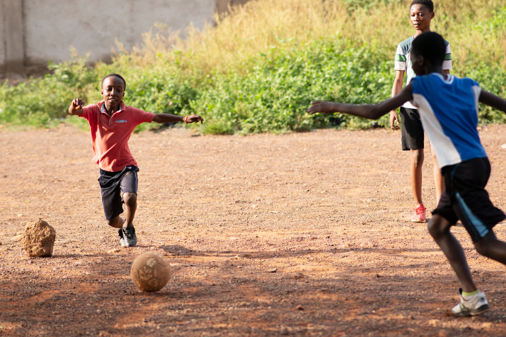

Mentorship workshop reached 60 participants
Mentors and participants, mostly boys, covered life skills and faith formation.
Program snapshots, outreach notes, and leadership milestones.
Mentors and participants, mostly boys, covered life skills and faith formation.

Three communities were engaged to identify young people needing support.

Participants demonstrated stronger decision-making and community service involvement.